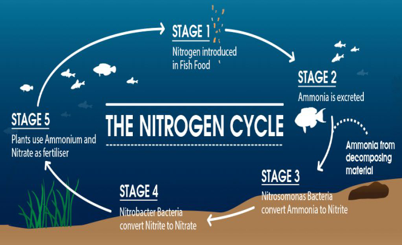

Do you have a new freshwater aquarium to start and you don’t really know how? You have come to the right place. We have put together this complete guide to provide you all the information you require to safely cycle a freshwater tank and answered the most common FAQ on cycling a tank.
Starting a new freshwater aquarium is fun and exciting. As soon as it’s filled with water we can’t
wait to start adding fish.
But rushing a new tank start up is a sure road to disaster. Why?
Because the health and well being of an aquarium depends on billions of invisible microbes that
keep the biologically balanced and safe for the fish.
That’s right! Most of the aquatic life in your freshwater aquarium is made up of microscopic bacteria.
These bacteria form the “biological filter”, which breaks down harmful fish waste.
Without these helpful microbes, your aquarium would be an ecological disaster.
In fact, most new aquarium problems are caused by adding too many fish before the beneficial bacteria
have had a chance to settle in.
Want to know how to properly start a new aquarium and avoid common pitfalls? Here’s how.
AMMONIA AND AQUARIUM FISH
It’s important to understand a little biology when starting up an aquarium. Aquarium fish require protein in
their diet. Ammonia (NH3) is a byproduct of protein metabolism and is excreted through the gill membranes.
A small amount of ammonia comes from the urine. Solid fish waste falls into the gravel where it decays and
also releases ammonia.
Uneaten fish food (flakes and pellets) decompose, adding ammonia to the aquarium water.
Ammonia is toxic to fish.
In nature, the ammonia is diluted by thousands of gallons of water. It’s also rapidly detoxified by bacteria
and even adsorbed by plants and algae.
However, the aquarium is very different. It’s a closed environment. Your tank is not spring fed. There’s no
stream flushing it with fresh water.
Home aquariums have a much higher ratio of fish per gallon than in the wild.
The fish population in an aquarium is thousands of times higher than in a natural stream or lake. This means
ammonia can easily build up to harmful levels in the tank.
When ammonia levels rise, it prevents the fish from excreting ammonia from their bodies. This can cause the
fish to suffer convulsions and even death if the ammonia level is very high.
Long term exposure to low levels of ammonia causes problems with the gills, liver, and kidneys.
Over time the fish will become weak and susceptible to disease problems. Their immune system won’t be able
to fight off stress and diseases that normally wouldn’t affect them.
Fortunately, there’s a group of beneficial, non pathogenic bacteria that detoxify ammonia, keeping the
aquarium water safe for the fish.
UNDERSTANDING NITRIFYING BACTERIA
The bacteria we’re interested in are called nitrifying bacteria. That’s because they use the nitrogen as a
“food” or energy source.
There are two types of nitrifying bacteria that work together to rid the aquarium of ammonia.
This two step detoxification process is called the nitrogen cycle.
The first type of bacteria are called ammonia oxidizing bacteria (AOB). This is a technical term for bacteria that use ammonia for energy, converting it to nitrite (NO2-) in the process. Nitrite is also toxic to fish, but we’ll talk about it later. Ammonia oxidizing bacteria go by names like Nitrosomonas and Nitrosospira. The conversion of ammonia to nitrite completes for first step.
Next, nitrite oxidizing bacteria (NOB) take over. Nitrobacter species convert nitrite into relatively harmless nitrate (NO3-).
The conversion of ammonia to nitrite, then to nitrate completes the nitrogen cycle. This what the phrase
“cycling an aquarium” means.
The nitrifying bacteria have run through the nitrogen cycle and formed stable colonies in the aquarium.
These colonies form the “biological filter” and keep the water free of harmful ammonia and nitrite. Nitrifying
bacteria can be found floating around in the aquarium water, but they tend to form colonies on surfaces like
gravel, ornaments and even on live plants.
They’ll colonize just about any surface, even inside the aquarium filter.
Most aquarium filters provide some type of special biological filter media for the bacteria to attach to.
The truth is, nitrifiers growth throughout the aquarium, not just on bio filter media. If you’re thinking
nitrifying bacteria are critical to the health of the tank, you’re 100% correct.
Here’s how they get into your aquarium.
WHERE DO NITRIFYING BACTERIA COME FROM?
There are many varieties of nitrifying bacteria in nature. Some types live in freshwater, some in saltwater and
others live in both!
Nitrifiers can be found in garden soil, on pebbles in a stream, living ocean sediment and in sewage treatment
plants. They’re almost everywhere, even in water vapor floating through the air.
In the early days of fish keeping, no one knew anything about nitrifying bacteria or biological filtration.
People added a layer of soil, pebbles and live plants when they started a new tank.
Nitrifying bacteria were carried into the aquarium on all these aquascaping materials and even on the live
plants and fish. This helped “seed” the new aquarium with bacteria, starting-up the biological filter.
Keep in mind that no one knew about ammonia and nitrite toxicity. They didn’t even have aquarium test kits to
check on the water quality.
In reality they were either very lucky and happened to add the right bacteria by accident or they lost a lot of
fish due to ammonia and nitrite build up.
Unfortunately, it’s much the same today. Most new aquarium hobbyists know nothing about nitrifying bacteria,
ammonia or nitrite.
They simply add fish and start feeding them. If they’re lucky, the fish survive the ordeal of swimming in ammonia
and nitrite.
But this is stressful and often leads to disease problems a month or two after setting up the tank. If the fish
are over fed or too many fish are added at one time, the ammonia level soars, killing the fish.
This is called New Tank Syndrome. But starting a freshwater aquarium doesn’t have to be like this.
PREVENTING NEW TANK SYNDROME
Today we know about biological filtration. We have ammonia and nitrite test kits to check on water quality. We
even have bottles of nitrifying bacteria to help seed and start up a new aquarium.
We no longer have to hope the new aquarium will be OK. We’ve got the tools we need to start the tank off
right. Right? Not exactly.
Even with the right tools, we still sometimes get it wrong. The aquarium trade came up with a name for it,
called New Tank Syndrome.
The easiest way to explain it is by describing what happens in the invisible world of new aquariums.
Imagine a newly set up freshwater tank. It looks beautiful.
Crystal clear water, nicely aquascaped and home to a variety of tropical fish.
The problem is, the aquarium is biologically sterile. The fish are eating and producing waste but there aren’t
enough nitrifying bacteria to detoxify the ammonia.
The ammonia is slowly rising. But It takes time for the nitrifiers to reproduce in the aquarium.
Nitrifying bacteria are really slow growers. They reproduce once every 24 hours. This is an unusually long time
compared to other microbes.
It’s going to take four to six weeks for the bacteria to fully form a healthy biological filter.
Over this time period the ammonia and nitrite will rise and fall as the biological filter develops. Ammonia causes
stress and tissue damage. Nitrite prevents the fish’s blood from absorbing oxygen. How you care for the aquarium
over this break-in period determines success or failure.
But don’t worry! We’ll explain everything you need to know about cycling your new aquarium.
HOW TO START THE CYCLING PROCESS
There are several ways to start up and cycle a new tank.
For our example we’ll use a 10 gallon aquarium.
We’ll describe each method along with the pros and cons.
Each method will cycle the tank but requires following certain procedures to make it work.
1 - ADD FISH AND HOPE FOR THE BEST
The most common cycling method is to fill the aquarium with water, start the filter and stabilize the water
temperature.
Then, add three fish to the tank. You can add more fish later, after the aquarium cycled.
Rushing only results in problems.
Feed the fish once a day and only what they’ll eat in a few minutes.
The more you feed, the more ammonia is released into the water.
Here’s the secret.
The nitrifying bacteria can’t reproduce unless there is something to “eat.”
They get their energy from ammonia. So, a new tank needs bacteria AND ammonia.
But not too much ammonia or it will harm the fish. That’s where many aquarists go wrong. They add too many fish
or add too much food.
This causes ammonia to build up faster than the bacteria can consume it.
But remember, the nitrogen cycle is a two step process.
The first step converts the ammonia to nitrite (also harmful).
The second step converts nitrite to nitrate.
This is where test kits come into the picture. You’ll be able to track the rise and fall of the ammonia, followed
by the rise and fall of nitrite, over the first four to six weeks after the fish.
When the ammonia and the nitrite levels fall to zero, the aquarium has cycled.
Once this occurs, you can add a few more fish to the tank. But don’t add all the fish. That’s because the biological
filter only grows to match the waste load of the tank.
Every time you add more fish, the biological filter has to grow to match the new fish population. But it happens
much more quickly after the initial cycle.
Just keep an eye on the ammonia and nitrite levels as you add more fish to the tank.
- The “old fashioned” proven way to slowly cycle the aquarium
- Prevents stressful conditions on new fish due to ammonia and nitrite
- Depends on “luck” to introduce nitrifiers to the aquarium
- Novice aquarists tend to rushing the process causing ammonia and nitrite spikes
- Can take a long time if few bacteria are introduced
- May require water changes to reduce ammonia or nitrite to protect the fish
2 - SEEDING BACTERIA FROM ANOTHER AQUARIUM
Old time fish shop owners knew they could improve the cycling process by seeding a new customer’s new aquarium with
bacteria from a shop tank.
This was done by adding a handful of seasoned aquarium gravel to the new tank.
An easier way is to put an old, dirty filter cartridge into the aquarium. Squeeze it out into the tank so bacteria laden “grunge” goes everywhere.
The idea is to add a living culture of nitrifiers and some fish at the same time.
Remember, just adding bacteria won’t help. You must add an ammonia source (fish) to stimulate the bacteria
to reproduce and colonize the aquarium.
- Works well if the filter cartridge is coated with nitrifiers
- Adds a variety of beneficial bacteria including nitrifiers
- The cartridge may also introduce algae to the aquarium
- If the old aquarium contains sick fish, it could introduce pathogens
3 - ADDING A BACTERIA STARTER
There is a lot of misinformation on the web about bacterial aquarium starters.
Some people say they’re all “snake oil.” Others say they work great.
Here’s what you need to know.
Some liquid bacteria products contain nitrifying bacteria. Some products contain non-nitrifying bacteria
called heterotrophs.
Heterotrophic bacteria digest organic matter, like fish waste, uneaten fish food and dead algae.
The bacteria reduce ammonia by ingesting the nitrogen before it forms ammonia. These bacteria don’t nitrify,
meaning they don’t convert ammonia into nitrate. This means that they won’t do a good job getting rid of the
ammonia released by the fish.
An established aquarium has both types of bacteria working to rid the tank of organic sludge, and ammonia and
nitrite.
Adding heterotrophs won’t hurt, but they don’t cycle the new aquarium.
You may have read that nitrifying bacteria won’t survive in a bottle because there isn’t enough oxygen. The
truth is, nitrifiers are very resistant to low oxygen conditions, otherwise they wouldn’t survive in nature
where they’re subjected to a variety of adverse conditions.
Research shows that a properly manufactured culture of nitrifying bacteria will survive for several years in
a liquid formulation.
It’s important to read the product label or visit the manufacturer’s website to determine if the bottle
contains true nitrifying bacteria.
There is also some confusion as to how these tank starter products work.
The better aquarium starters say to add the bacteria and fish at the same time. As we’ve discussed, the
nitrifiers need the ammonia produced by the fish to activate and start to colonize the aquarium.
Pouring in the bacteria and waiting a week does nothing! The biological filter can’t activate unless there
is an ammonia “food” source to feed on.
That’s why the product instructions say to add some fish to the aquarium right away. Understand that adding
live nitrifiers does not eliminate the cycling process.
Instead of six weeks, you may see the tank cycle in two to four weeks. You’ll still see ammonia and nitrite
levels rise and fall, but the levels will be much lower and less stressful to the fish.
- No chance of adding algae or fish diseases
- Ensures your adding live nitrifiers
- Reduces the peak levels of ammonia and nitrite
- Some products don’t contain real nitrifiers
4 - FISHLESS CYCLING
The idea of fishless cycling is simple.
Instead of using fish to create the ammonia necessary to energize the biological filter, just add ammonia.
This way of cycling an aquarium was made popular with saltwater hobbyists. Instead of subjecting sensitive and
expensive marine fish to harmful ammonia and nitrite spikes, the aquarium would be “artificially” cycled without
any livestock.
This makes sense for in freshwater aquariums too.
There are two ways of doing it.
-
Many aquarists simply add several pieces of flake food to the tank along with live nitrifiers. The food will degrade and add ammonia to the water. It’s difficult to know how much ammonia the food adds. Testing with an ammonia kit will allow you to track the initial rise in ammonia and the corresponding spike of nitrite. You must add enough food to get the ammonia up to about 0.5 ppm.
-
Another method is to add household ammonia to the tank. Opinions vary but the idea is to add ammonia to the water until it reaches 0.5 ppm. An easy way to figure out how much ammonia to add is to dose a one-gallon bucket of water. Test the water for ammonia after adding several drops of ammonia.
- Eliminates fish stress during the cycling period
- No need for frequent water testing to protect the fish during cycling
- Forces the biological filter to grow larger all at one time
- Lets you add lots of fish after the tank has cycled
- Fish food boosts organics in the water
- Decaying food can cause a heterotrophic bacteria bloom.